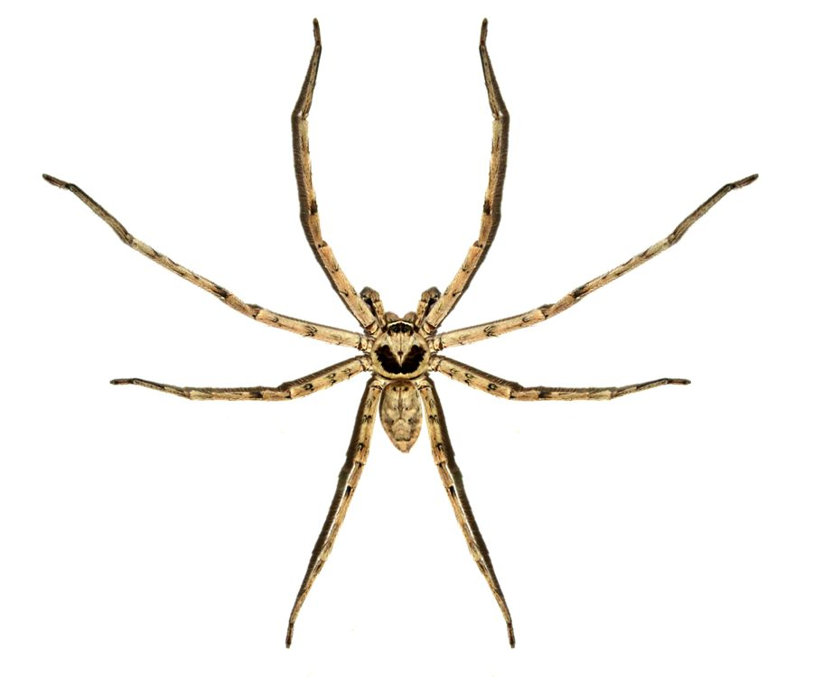

शिकारी मकड़ीHuntsman Spider
Heteropoda venatoria · Sparassidae · SPD-0004

- Scientific name
- Heteropoda venatoria (Linnaeus, 1767)
- Family
- Sparassidae
- Hindi
- शिकारी मकड़ी
- Status here
- native
- IUCN
- not evaluated
When to look कब देखें
Present all year.
शिकारी मकड़ी / Huntsman Spider
Heteropoda venatoria (Linnaeus, 1767) — Sparassidae
शिकारी मकड़ी — घरों, झोपड़ियों और पुराने पेड़ों की छाल के नीचे पाई जाने वाली एक अत्यंत आम और बड़े आकार की देशी मकड़ी है। यह कोई जाला (web) नहीं बनाती, बल्कि रात के समय दीवारों और फर्श पर बहुत तेजी से दौड़कर कॉकरोच, मक्खियों और अन्य कीटों का शिकार करती है। इसका शरीर चपटा और पैरों का फैलाव काफी बड़ा होता है, जो इसे संकीर्ण स्थानों में छिपने में मदद करता है। मादा मकड़ी अपने सफेद, डिस्क के आकार के अंड-कोश (flat, disc-shaped egg sac) को अपने शरीर के नीचे दबाकर घूमती है और उसकी सुरक्षा करती है। यद्यपि इसका आकार डरावना लग सकता है, लेकिन यह इंसानों के लिए हानिकारक नहीं है और घरों में कॉकरोच नियंत्रण करने वाली एक महत्वपूर्ण मित्र जीव है।
Quick Identification त्वरित पहचान
| Feature | Description |
|---|---|
| Size & Shape | Large, flattened spider; legs are long and positioned laterally (crab-like posture), allowing rapid sideways movement |
| Colour | Yellowish-brown to greyish-brown; females have a dark band behind the eyes and a light border on the carapace; males have a dark, heart-shaped mark behind the eyes |
| Legs | Very long, banded or spotted with fine black bristles, with the second pair of legs being slightly longer than the first |
| Eyes | Eight small eyes arranged in two horizontal rows of four on the front of the carapace |
| Egg Sac | Females carry a flat, disc-shaped, papery-white egg sac (about 12–18 mm diameter) beneath their sternum using their chelicerae |
Field tip: Look for a large, flat, brown spider with a leg span of up to 10–12 cm sitting flat on walls or behind furniture. Males are smaller with a dark, heart-shaped pattern on the carapace, while females often carry a white disc-shaped egg sac underneath.
Morphology आकारिकी
Biometrics (typical measurements in the Gangetic plain):
| Measurement | Range |
|---|---|
| Body length (female) | 22–30 mm |
| Body length (male) | 18–22 mm |
| Leg span | 70–120 mm |
Dimorphism: Females are noticeably larger and stouter, with a bulbous abdomen. Males are smaller and possess relatively longer legs, with a distinct pale circle surrounding a dark heart-shaped mark on the carapace.
Body Structure: The carapace is flat and broad, and the abdomen is oval and flattened dorsoventrally, which allows the spider to squeeze into narrow crevices. The legs are covered in long, sensory hairs (setae) and spines, which assist in detecting air currents and vibration from prey.
Vocalisations
Spiders do not possess vocal chords and are generally silent.
- Sound production: During courtship, males produce low-frequency vibrations or drumming sounds by tapping their legs or abdomen against the substrate (walls, leaves) to signal females.
Behaviour & Ecology व्यवहार और पारिस्थितिकी
Heteropoda venatoria is a nocturnal hunter. It does not spin webs to catch prey; instead, it relies on its stealth, excellent eyesight, and sudden bursts of speed. During the day, it hides in crevices, behind wall frames, or under loose bark. At night, it emerges to patrol walls and ceilings for insects.
Life Cycle / Phenology जीवन चक्र
- Mating: Courtship is acoustic and tactile. The male vibrates the substrate to prevent the female from attacking him as prey.
- Egg Care: After laying 100–300 eggs, the female constructs a flat, disc-like egg sac. She carries it constantly under her body, held by her chelicerae and pedipalps. She does not feed during the 3–4 weeks of egg carrying.
- Development: Upon hatching, the spiderlings emerge and remain with the mother for a few days before dispersing.
- Lifespan: The species typically lives for 1–2 years.
Host Plants or Prey आहार
Primary food items:
- Insects: Mostly cockroaches, crickets, flies, moths, silverfish, and domestic termites.
- Other Arthropods: Smaller spiders and insect larvae.
Predators / Natural Enemies शत्रु
- Reptiles: House Geckoes ([REP-0007 House Gecko]) and Bengal Monitors ([REP-0004 Bengal Monitor]).
- Insects: Spider wasps (Pompilidae), which paralyze the spider to feed their larvae.
- Mammals: Shrews and bats.
- Humans: Often killed out of fear, though they are harmless.
Agricultural / Human Relevance कृषि प्रासंगिकता
Household Ally. By actively hunting and eating domestic pests like cockroaches and termites, the Huntsman Spider acts as a highly effective, pesticide-free biological control agent. The species is non-aggressive towards humans; bites are extremely rare, only occurring if the spider is directly squeezed, and their mild venom causes only temporary localized pain similar to a mild bee sting.
Expected Locally स्थानीय रूप से अपेक्षित
Not a field record. Written from published accounts for eastern Uttar Pradesh. No confirmed local sighting yet — if you have seen it, that is what the atlas needs.
अभी तक स्थानीय पुष्टि नहीं। यह विवरण प्रकाशित स्रोतों से है, किसी अवलोकन से नहीं।
A very common household spider in Basti district, seen on walls at night or discovered when moving old boxes, calendar frames, or stacks of firewood. Known locally as Shikari Makdi or Gharua Makdi.
Distribution वितरण
Global range: Pantropical distribution, found globally in tropical and subtropical regions.
In India: Widespread and common throughout the country.
In Uttar Pradesh: Abundant in urban, suburban, and rural households.
In Basti district / eastern UP: Found in virtually every household, outhouse, and orchard.
Research Questions शोध प्रश्न
Anyone can investigate these | कोई भी इन प्रश्नों की जाँच कर सकता है
- How does the presence of Huntsman Spiders affect the population of cockroaches in a household over a month? — Monitor cockroach activity before and after spider colonization.
- What substrate textures (plastered wall, brick, wood) do Huntsman Spiders prefer for running speed? — Time their escape runs on different materials.
- Can you spot the difference between a male and female Huntsman Spider on your household walls? / क्या आप अपने घर की दीवारों पर नर और मादा शिकारी मकड़ी के बीच का अंतर पहचान सकते हैं? — Use field tip details to identify sexes from a safe distance.
- Does the carrying of an egg sac restrict the maximum running speed of female Huntsman Spiders? — Test escape speeds of egg-carrying vs. non-egg-carrying females in a safe enclosure.
- At what temperature range do Huntsman Spiders show the highest activity levels during the night? / रात के दौरान किस तापमान सीमा पर शिकारी मकड़ियाँ अपनी उच्चतम गतिविधि स्तर दिखाती हैं? — Record midnight temperatures and spider sightings.
Similar Species मिलती-जुलती प्रजातियाँ
| Species | How to tell apart | हिंदी |
|---|---|---|
| [SPD-0003 Pantropical Jumping Spider] | Much smaller (body length under 12 mm); moves with sudden jumps rather than rapid running; has large anterior median eyes | कूदने वाली मकड़ी — छोटा आकार, उछल कर चलना |
| Wolf Spider (Lycosidae) | Carries egg sac attached to spinnerets at the rear, not under the body; does not sit flat on vertical walls | भेड़िया मकड़ी — पीछे अंडा ले जाना, जमीन पर रहना |
| [SPD-0002 Giant Wood Spider] | Spins massive golden orb-webs in trees; body is highly elongated and brightly colored; found in forest canopies | विशाल जंगली मकड़ी — जाला बुनना, पेड़ पर रहना |
Field rule: Flat crab-like body, leg span up to 12 cm, yellowish-brown colour, and rapid running without web-spinning identifies the Huntsman Spider.
Taxonomy & Classification वर्गीकरण
Original description. Carl Linnaeus described the species as Aranea venatoria in 1767 in the 12th edition of Systema Naturae (Volume 1, Part 2, page 1035). Type locality: Warm regions of the world. Latreille later transferred it to the genus Heteropoda. The genus name Heteropoda is derived from Greek, meaning "different feet," referring to the unequal leg lengths, and venatoria means "hunting."
Subspecies. Monotypic.
Family and order placement. Placed in the order Araneae, family Sparassidae (huntsman spiders).
Phylogenetic notes. Heteropoda venatoria is the type species of the genus Heteropoda.
IUCN status rationale. Not evaluated (NE) by the IUCN Red List, as is common for most spiders, but it is highly abundant and faces no threats of extinction.
Photo Gallery फोटो गैलरी
References संदर्भ
- Linnaeus, C. (1767). Systema Naturae per regna tria naturae, secundum classes, ordines, genera, species, cum characteribus, differentiis, synonymis, locis. Editio duodecima, reformata. Holmiae, 1(2), p. 1035. [original description as Aranea venatoria]
- Tikader, B.K. & Sethi, V.D. (1990). Studies on some giant crab spiders (Family: Sparassidae) from India. Journal of the Bombay Natural History Society, 87(2), 165–187.
- Jäger, P. (2001). A systematic review of the Sparassidae (Arachnida: Araneae). Organisms Diversity & Evolution, 1(4), 1–16.
- Platnick, N.I. (2024). The World Spider Catalog. Version 25.0. American Museum of Natural History.
- World Spider Catalog (2024). Heteropoda venatoria. Version 25.0. Bern: Natural History Museum.
- GBIF Occurrence Data — Heteropoda venatoria, Uttar Pradesh (2010–2025).
Source file: species/fauna/spiders/huntsman_spider.md